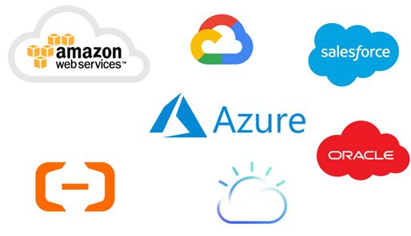

Con el advenimiento de las tecnologías cloud, y el crecimiento exponencial de los servicios que ofrecen las mismas, me parece que a esta altura no empezar a capacitarme en esto sería (como decía un profesor mío) una picardía.
Es el motivo principal por el cual decidí que voy a tratar de aprovechar los servicios (al menos los más populares) que ofrezca AWS en este caso en particular.

Estos días, pensando en el mundo serverless, estuve investigando sobre dos servicios en particular: Lambda y API Gateway. Realmente estoy sorprendido con la facilidad de uso y acceso a un servicio que nos resuelve un montón de problemas: Se puede decir que el registro en AWS es más complejo que crear una función Lambda funcional dentro de AWS.

Lo mismo corre para API Gateway, y también para la integración entre ambas. Con el correr de los minutos (obviamente siguiendo uno que otro tutorial) pude ubicar todos los elementos en orden y poner en funcionamiento un endpoint funcional, que en un principio devolvía una respuesta mockeada y luego directamente hacía uso de la función Lambda ya creada.
Inclusive con la posibilidad de crear distintas versiones de funciones en Lambda y “stages” en API Gateway, y mapear las respuestas en esta última.
Sin todavía haber involucrado otros servicios de base de datos o almacenamiento, ya empiezo a sentir que fue una buena decisión.
Eso si… Ojo que todo se cobra ;)